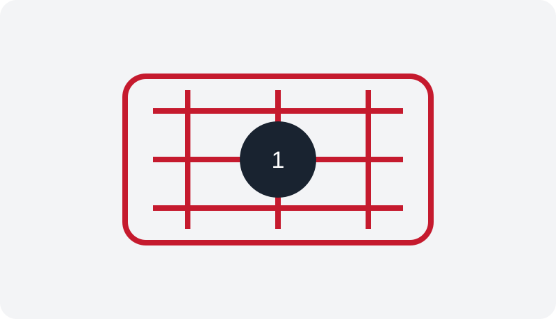
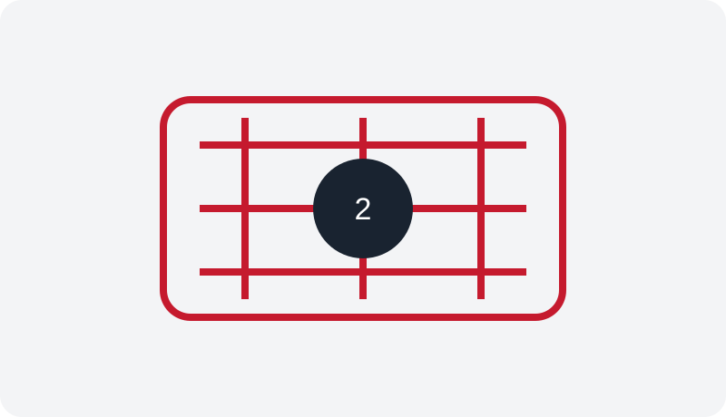
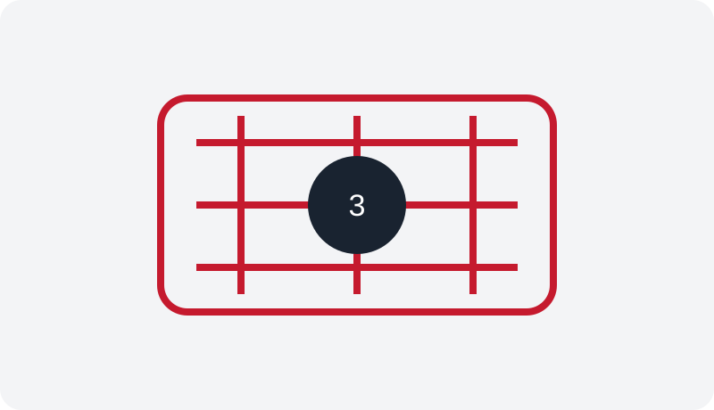

2D Material-Based Process Technologies
2차원 물질 기반 공정 기술 개발
Scalable fabrication, transfer, contact, interface and heterogeneous-integration technologies for emerging two-dimensional semiconductors.
Innovative electronic and optoelectronic devices based on emerging semiconductor materials.
Explore our researchOur group develops two-dimensional-material-based devices, polarity-controllable electronics, neuromorphic hardware, photodetectors, and in-sensor computing systems.

Scalable fabrication, transfer, contact, interface and heterogeneous-integration technologies for emerging two-dimensional semiconductors.

Reconfigurable transistors, artificial synapses and neurons, optoelectronic memories, and in-sensor computing devices.

Hardware demonstrations connecting sensing, memory, learning, inference, and decision-making using emerging devices.